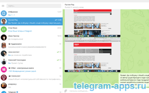

| Категория: | Общение | |
| Поддерживаемые ОС: | Windows XP | |
| Разрядность: | 32 bit, 64 bit, x32, x64 | |
| Для устройств: | Компьютер | |
| Язык интерфейса: | на Русском | |
| Версия: | Последняя | |
| Разработчик: | Telegram Messenger |
Телеграм — популярный мобильный мессенджер с разработанным приложением для ПК. Телеграм скачать для XP версии Виндовс, программа оптимизирована под XP и будет вполне комфортно работать без лагов, казалось бы версия OS устарела но разработчики понимают что многие еще на нем сидят возможно из за небольших системных требований к железу.
 |
 |  |
{kind=link}
Telegram для Виндовс XP на компьютер
Программа для общения популярна как в России, так и за границей. Сначала был запущен мобильный Телеграм, после успеха которого созданы версии для десктопных платформ, в том числе и для Windows XP, тогда еще активно используемой. На начало апреля 2020 года в Телеграм зарегистрировано 400 миллионов аккаунтов, а разработчики приложения перестали обновлять и оптимизировать клиент для Windows XP. Программу по-прежнему можно скачать и пользоваться ей на ПК, но без обновлений. Телеграм не потребляет много ресурсов компьютера и не требует высокоскоростного интернет-подключения для общения.

Главная фишка мессенджера — наличие продвинутой системы шифровки. Сообщения переводятся в случайно генерируемый код, расшифровка которого потребует много времени. Ключи от шифра хранятся только на устройствах собеседников. Ни спецслужбы, ни разработчики Телеграм не имеют доступа к чтению сообщений. Функция секретного чата защищает информацию от создания скриншотов, пересылки, а установка времени жизни сообщения — от чтения чата случайными лицами, в руки которых попадет устройство. После просмотра собеседником сообщение удаляется через заданный промежуток времени. Телеграм сохраняет личную информацию пользователей.
Телеграм для версий windows:
Скачать Telegram для Windows XP бесплатно
| Приложение | OS | Формат | Распаковщик | Версия | Загрузка |
|---|---|---|---|---|---|
| Telegram | Windows XP | x64 | OpenBox | Бесплатно (на русском) | |
| Telegram | Windows XP | x32 | OpenBox | Бесплатно (на русском) |
Как установить Telegram для windows XP:
Запустите файл.

Ознакомьтесь с информацией и нажмите "Далее".
Нажмите "Далее", или снимите галочки с рекомендуемого ПО и нажмите "Далее". Если снять все галочки, рекомендуемое ПО не установится!

После всех шагов нажмите "Установить".

Телеграм поддерживает привычные функции и предлагает фишки, которых нет в других мессенджерах. Меняется фон, настраиваются уведомления и звуки оповещений. В личных и групповых чатах отправляются смайлы, голосовые и видео сообщения, исполняемые и текстовые файлы, картинки и видео весом до 1,5 Гб. Можно загружать чужие стикерпаки нажатием или создавать собственные, взяв за основу картинки из галереи устройства, из интернета или личные фото. Нет ограничений на количество отправляемых сообщений и пересылаемого контента. Эти полезные опции мессенджера станут доступными и на ПК после скачивания приложения для Windows XP.
Удобно, для работы и общения с коллегами и единомышленниками просто отлично.
Для XP вообще программы теперь не отыщешь, а жалко, не хочу другую винду ставить.
Отличное приложение, в некоторых аспектах даже лучше ВКонтакте.
Мне привычнее в компьютере, чем на смартфоне. Поэтому авторам респект!
Скачала себе на компьютер, Очень удобно писать через комп да и время затрачивается теперь меньше
Есть светлая и темная темы, куча бесплатных стикеров и других плюшек. Конкретно в версии для ПК пара моментов меня напрягают, но в целом все ок)
Блин круто, максимальное сопряжения смартфона и компа уже здесь, теперь можно больше групп модерировать!
Очень удобный меседжер.
Хороший мессенджер, пользуюсь постоянно с компа.
Можно приватно общатся, в отличие от других подобных прог
Самый удобный мессенджер
хочется отметить хорошую защиту от взлома.
можете общаться конфиденциально, в отличие от других подобных программ. Есть светлые и темные темы, тонны бесплатных стикеров и другие плюшки
у меня версия xp зверь 86
Мне удобно общаться через комп